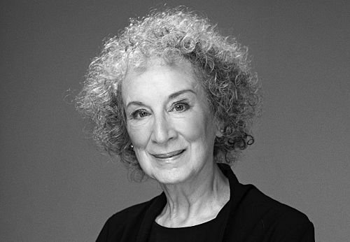
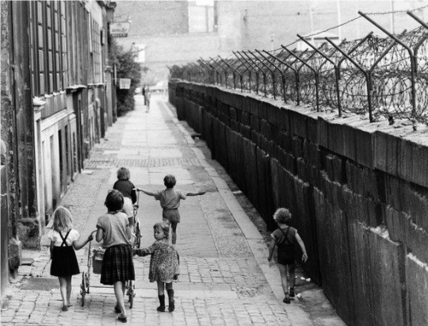

The Life of the Author
Margaret Atwood is a highly acclaimed Canadian writer who writes feminist and speculative fiction. Her interest in history, politics and how totalitarian governments operate are all reflected throughout her writing.

The Time of Writing
Margaret Atwood was writing this novel in 1984 when she lived in West Berlin. During that time she had to live with the presence of the Berlin Wall and the Cold War. In addition to these influences, she was also influenced by the rise of the Moral Majority's movement in America and Iran's revolution. She observed that rights were being taken from citizens rapidly.

The Novel's Setting
In the novel, it is set in the near-future and located within the Republic of Gilead. This is a theocratic, military dictatorship that has replaced the U.S. government. The location in which the majority of the novel is located is Cambridge, Massachusetts. Using historically liberal Harvard University as the base of operations for the regime is a deliberate example of irony used by Atwood.
References:
- "Margaret Atwood." Wikipedia, Wikimedia Foundation, 28 Apr. 2026, en.wikipedia.org/wiki/Margaret_Atwood. Accessed 03 May 2026.
- The Handmaid's Tale | Plot, Legacy, & Facts | Britannica, www.britannica.com/topic/The-Handmaids-Tale-by-Atwood. Accessed 30 Apr. 2026.
photos references:
- Morris, Mary. “Margaret Atwood.” THE PARIS REVIEW, www.theparisreview.org/il/509d6f199a/large/Margaret_Atwood_13768.jpg.
- “The Berlin Wall.” History Extra, images.immediate.co.uk/production/volatile/sites/7/2017/11/GettyImages-548194885-e0e5a16-7d250df.jpg?quality=90&webp=true&resize=720,480.